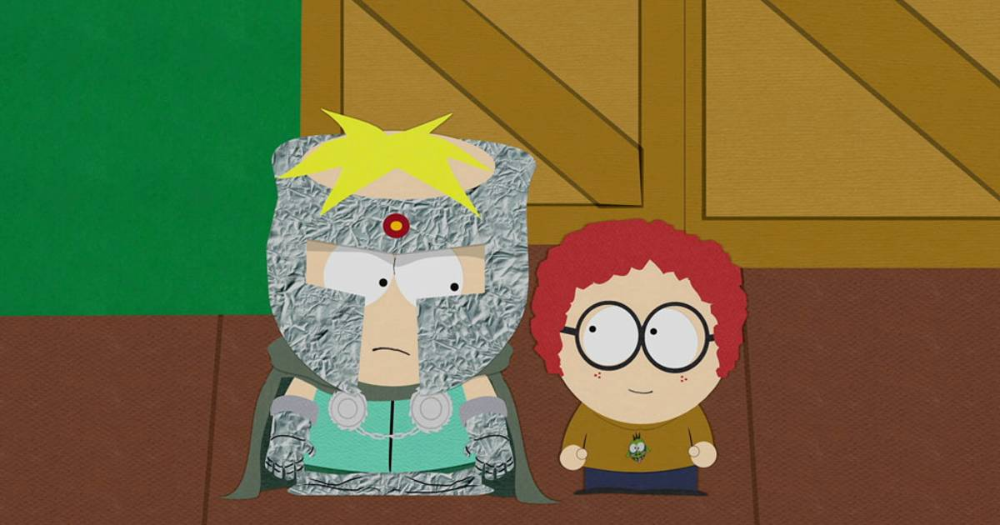

About General Disarray
General Disarray from South Park is Professor Chaos’s overly loyal but dim-witted sidekick who enthusiastically supports his chaotic plans despite barely understanding them.

General Disarray and Professor Chaos
General Disarray’s Characteristics
- Loyal sidekick – he faithfully follows Professor Chaos’s lead.
- Low intelligence – he often misunderstands plans and situations.
- Eager enthusiasm – he is very excited to participate in "evil" schemes.
- Childlike personality – he behaves in a naive, immature, and playful way.